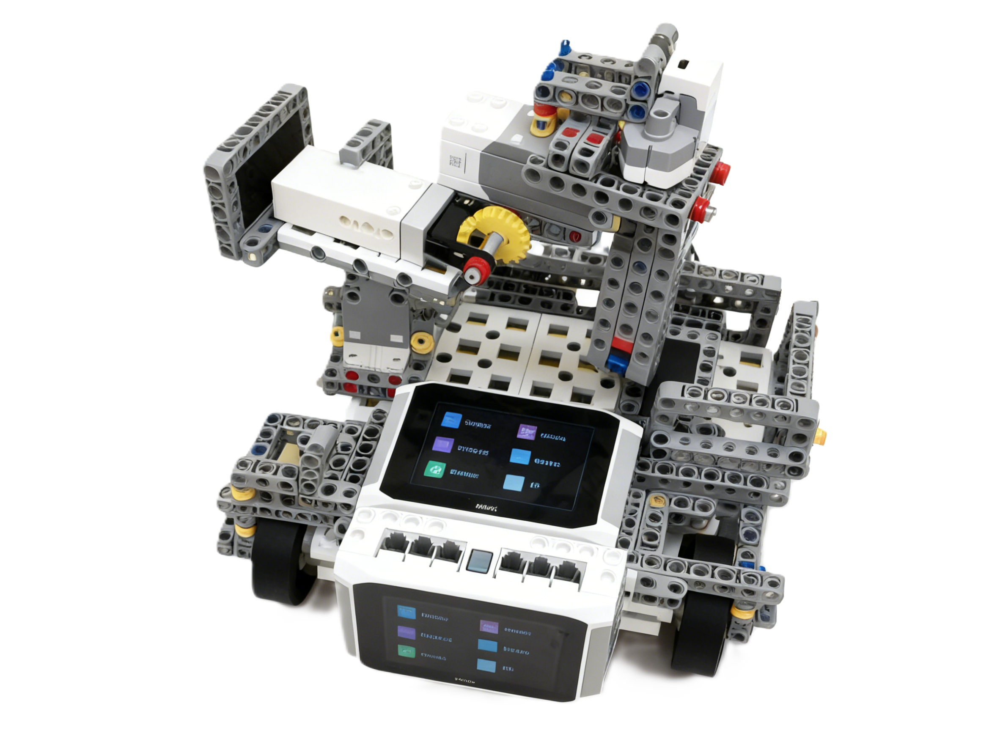

智联采丰车
进入管理系统智慧农场核心种植设备，集自动化、精准化、智能化于一体，大幅提升播种效率与出苗质量

核心参数
作业效率
15亩/小时（比传统设备提升300%）
动力类型
纯电动
控制方式
自动巡航 + 手动备份
播种精度
株距误差≤±1cm，深度误差≤±0.5cm
收获精度
收获效率达人工的1.5倍，损伤率低于5%
适用作物
蔬菜、谷物、油料等多种作物
用户手册 SKCON9
核心功能
全平台首次实现SK209主板通讯
首次实现SKCON9主板的双向通讯，并将主板接入IOT/Mesh2.0/内联网，实现公网通讯，实时上传至智慧农场管理系统。
智能控制
支持快速编程界面设定作业参数、规划作业路径，实时查看采收量，无需现场值守，节省人工成本。
安全防护
使用新能源汽车同款视觉辅助驾驶技术，利用摄像头检测前方障碍（人、动物、其他机械设备等）,实现自动启停，防止运行过程中出现各种突发情况。
网站管理
拥有独立的管理网站，核心技术使用局域网连接主板，全平台首次实现，实现了采集数据无缝同步（网络情况好的情况下低至16ms）。
使用须知
-
-
维护保养
每日作业后清洁播种器和传感器，每周检查电池状态和轮胎，每月进行一次全面设备检测。
安全规范
设备作业时，禁止人员进入作业区域；雨天、大风等恶劣天气请勿使用，避免设备故障。
-
-